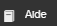
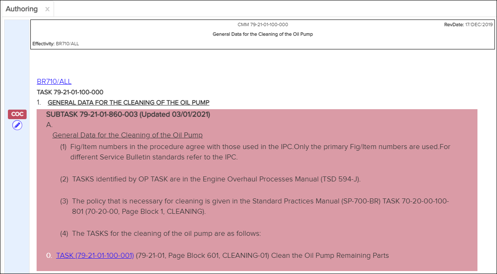

Autorisations
Non applicable pour Pinpoint Standalone Light.
La création a quatre personnages principaux: auteurs, réviseurs, fusions et auditeurs. L'accès aux différentes fonctionnalités de création est contrôlé par des privilèges. La définition des autorisations pour un privilège est une condition préalable pour pouvoir utiliser ces fonctionnalités.
Chaque organisation peut apporter ses propres modifications aux documents partagés. La version modifiée est accessible et visible uniquement aux utilisateurs de cette organisation. La version d'origine (non modifiée) est accessible et visible pour les utilisateurs d'autres organisations.- EM
- IPC
- OMAT
- SDS
- SPM
- TLM
- TSD
- Pour les modules de données de schéma de procédure :
- Si un DM contient des sections avec des IDs, ces sections seront modifiables.
- Les sections modifiables sont désignées comme mises à jour OEM.
- Si un DM ne contient aucune section avec des IDs, l'intégralité du DM sera modifiable.
- La fonction Pill and Tab sera masquée pendant une session d'édition.
- Le système ne gère pas la renumérotation automatique des sections, cela doit être fait par l'auteur.
- La fonctionnalité de navigateur d'étape sera désactivée dans l'onglet de création.
- Lors de la création de figures, les modifications apportées à un titre de figure
ne seront pas reflétées dans la liste des figures du panneau graphique.
- Pour synchroniser le titre de la figure à la fois dans le panneau de contenu et dans le panneau de la figure, l'utilisateur doit les modifier séparément dans la liste des figures et le panneau des graphiques.
- Pour les modules de données de schéma descriptif :
- Si un DM contient des sections avec des IDs, ces sections seront modifiables.
- Les sections modifiables sont désignées comme mises à jour OEM.
- Si un DM ne contient aucune section avec des IDs, l'intégralité du DM sera modifiable.
- S'il n'y a pas de sections modifiables, l'ensemble du DM sera modifiable et désigné comme OEM.
- La fonction Pill and Tabulation sera masquée pendant une session d'édition.
- Le système ne gère pas la renumérotation automatique des sections, cela doit être fait par l'auteur.
- Pour les modules de données de schéma d'articles :
- Si un DM contient des sections avec des IDs, ces sections seront modifiables et doivent être marquées comme modifiables.
- Les sections modifiables sont désignées comme mises à jour OEM.
- Si un DM ne contient aucune section avec des IDs, l'intégralité du DM sera modifiable.
- La fonction Pill and Tabulation sera masquée pendant une session d'édition.
- Il est de la responsabilité de l'auteur de conserver tous les liens existants intacts (ininterrompus), par exemple : pour les liens de PNR, Vendor, SB.
- Le système ne gère pas la renumérotation automatique des sections, cela doit être fait par l'auteur.
Les autorisations sont définies dans Access Control pour la fonctionnalité de création. Reportez-vous à la rubrique "Permissions for Pinpoint Viewer" dans Flatirons Access Control Module User Guide pour connaître les autorisations disponibles pour Pinpoint. Vous pouvez ouvrir ce guide en cliquant sur le bouton

dans la barre d'en-tête de l'application Access Control- Peut créer du contenu permet d'accéder au mode de
création.
Vous devez avoir l'autorisation du privilège Peut créer du contenu pour accéder au mode de création dans Pinpoint. Faire référence à Entrer en mode de création.
Cette autorisation vous permet également de voir les ancres des documents dans le volet Table des Matières. Lorsque les ancres de document sont disponibles, vous pouvez utiliser la fonction de copie de lien pour copier des liens vers l'ancre. Faire référence àAjouter un lien.
- Peut fusionner de nouvelles révisions permet aux utilisateurs de créer un rapport de fusion et d'effectuer des fusions côte à côte.
- Peut examiner les modifications créées par l'auteur permet aux utilisateurs d'accepter ou de rejeter les modifications créées.
- Peut consulter le journal des modifications permet d'accéder au journal des modifications créées.
Code de couleurs
- Statut du brouillon
Vous pouvez identifier rapidement l'état du brouillon par la couleur sur le côté gauche de la boîte de dialogue Historique des Modifications et du journal Historique.
- En état de brouillon: Orange
- En état de révision: Bleu
- En statut approuvé: Vert
Voici un exemple du journal Historique , qui est accessible à tous les utilisateurs avec l'autorisation Peut créer du contenu:
Journal d'historique.
- Faits saillants de la révision
Ces couleurs indiquent le type de modifications apportées au contenu créé:
- OEM changements: bleu clairRemarque : OEM la mise en surbrillance n'est visible que sur Report de Conflits.
- COC modifications (approuvées): rose clair
- COC modifications (non approuvées / nouvelles): rose plus foncé
- Changements conflictuels: gris

COC Changement (non approuvé / nouveau)
- OEM changements: bleu clair